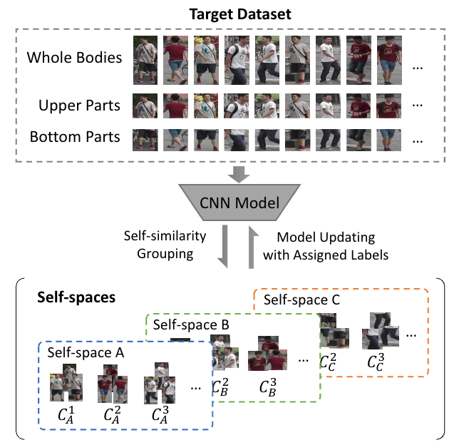

Yang Fu
I am a Ph.D. candidate in Computer Science at UC San Diego where I am fortunate to work with Prof. Xiaolong Wang. During my Ph.D., I was fortunate to receive the Qualcomm Innovation Fellowship (2023). Before that, I obtained my M.S. in ECE at University of Illinois at Urbana-Champaign in 2020 under the supervision of Prof. Thomas S. Huang and Prof. Humphrey Shi.
Publications
Preprints
Conference Papers
-
 CVPR
CVPR
Learning to Track Instances without Video Annotations
IEEE/CVF Conference on Computer Vision and Pattern Recognition (CVPR), 2021 Oral
-
 AAAI
AAAI
CompFeat: Comprehensive Feature Aggregation for Video Instance Segmentation
AAAI Conference on Artificial Intelligence (AAAI), 2021
-
 ICCV
Self-similarity Grouping: A Simple Unsupervised Cross Domain Adaptation Approach for Person Re-identification
IEEE/CVF International Conference on Computer Vision (ICCV), 2019 Oral